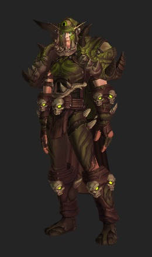
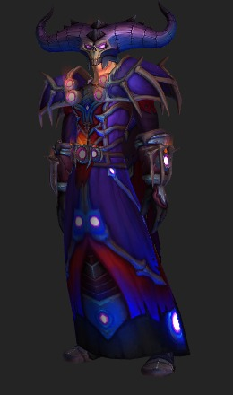
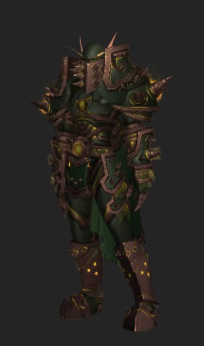
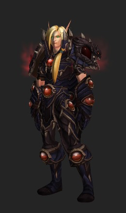
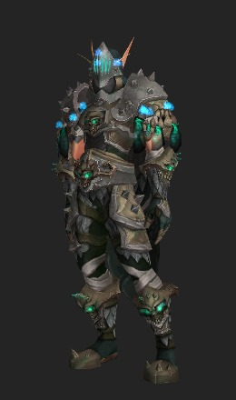
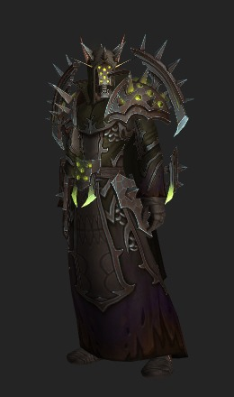
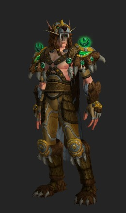
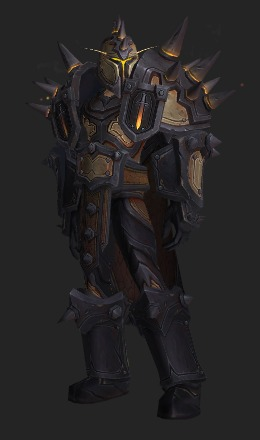

Une extension plus tard, c'est Sargeras le chef des démons qui s'en prend au monde d'Azeroth. Les champions sont contraints à l'attaquer dans son fief : le trône d'Antorus.
Bien que c'est Sargeras que nous attaquons, nous nous battons seulement contre ses serviteurs, même à la fin du raid (bataille contre Argus)
A la fin des évènements du trône ardent, les Titans se joignent aux champions pour s'occuper de Sargeras, seulement, avant de disparaitre le démon parvient à planter une épée géante sur la planète d'Azeroth, créant un cratère géant !
Les ensembles d'armures du Tier 20 (Version Héroïque)
Chaman

Chasseur

Démoniste
Druide

Guerrier
Mage
Paladin
Prêtre

Voleur

Chevalier de la mort
Moine
Chasseur de démon
Les ensembles d'armures du Tier 20 (Version Mythique)
Chaman
Chasseur

Démoniste

Druide

Guerrier
Mage
Paladin
Prêtre
Voleur
Chevalier de la mort
Moine
Chasseur de démon